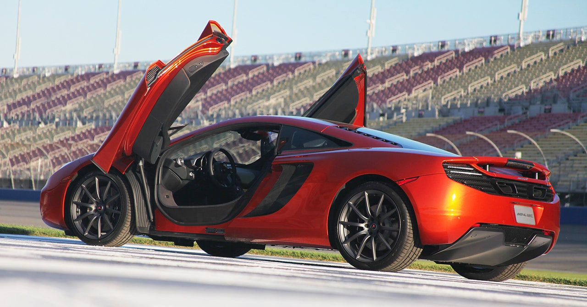
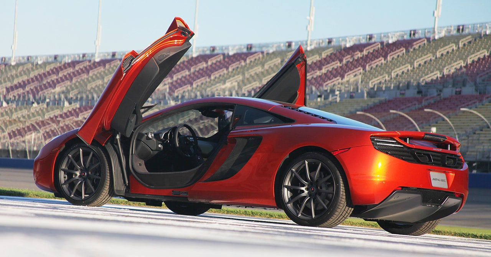

OTOMOBİLİM.COM
McLaren
1963'te Yeni Zelandalı Bruce McLaren (1937-1970) tarafından kurulan Formula 1 takımıdır. McLaren F1 Takımı, Formula 1'in en eski ve başarılı takımlarından biridir. Takım 2019 sezonu itibarıyla Mclaren-Renault ile uzun yıllar sonrasında en iyi yılını geçirmiş ve sezonu 4. sırada tamamlamıştır. Ayrıca Mclaren Racing; Formula 1'in yanı sıra Indianapolis 500 Mil Yarışı, Kanada-Amerika Challenge Kupası ve Le Mans 24 Saat Yarışı gibi organizasyonlarda da yer almıştır.Ünlü pilot Ayrton Senna da en başarılı sezonlarını burada yaşamıştır. 2018 itibarıyla Mclaren Racing F1 CEO Zak Brown tarafından yönetilmektedir. Takım patronu ise Andreas Seidl dir. Güncel olarak Mclaren takımının en büyük ortağı Bahreyn Mumtalakat Holding Şirketi'dir. Diğer ortaklar Mansour Akram Ojjeh ve Michael Latifi'dir. McLaren'in 11 sürücüler şampiyonluğu, 8 de markalar şampiyonluğu bulunmaktadır. 2007 yılında suçlu bulundukları casusuluk skandalı nedeniyle tüm puanları silinmiştir.
 
